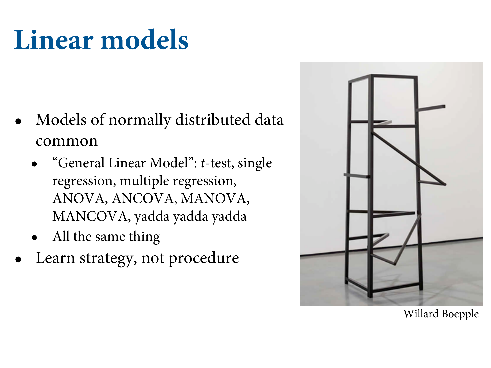
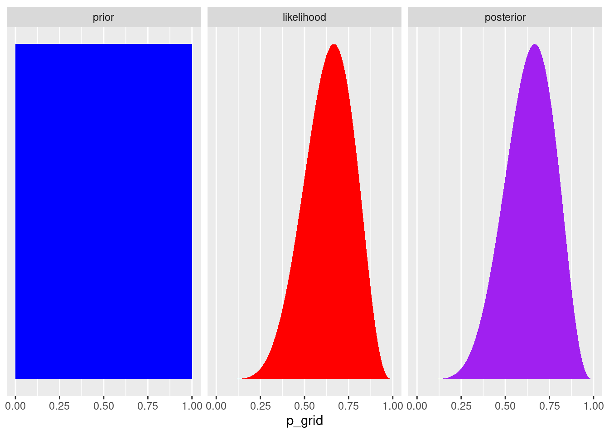

1.2 A language for describing models
Figure 1.14: All of those things are linear models. Just learn the linear modeling strategies instead of the specific procedures. We’ll build up linear models from the ground up. You can build the model you need.
1.2.1 Re-describing the glob tossing model
Figure 1.15: We’re going to write out all the models in the same standard notation. We’re going to write this in our code so that it’s reinforced.

Figure 1.16: Same applies for more complex models. Some of these things you can observe (water tosses), and some you can’t (regression slopes). We need to list these variables and then define them.

Figure 1.17: The motor of these linear regression models. There’s some mean of the normal distribution that is explained by \(x\). But \(x\) also has a distribution.


w = 6; n = 9
p_grid = seq(from = 0, to = 1, length.out = 100)
posterior = dbinom(w, n, p_grid) * dunif(p_grid, 0, 1)
posterior = posterior / sum(posterior)
samples = sample(p_grid, 1e5, prob = posterior, replace = T)
rethinking::dens(samples)